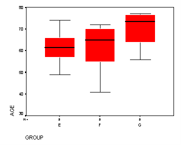
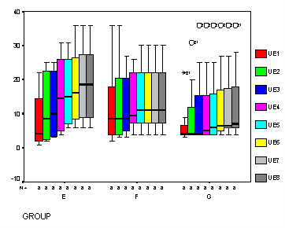
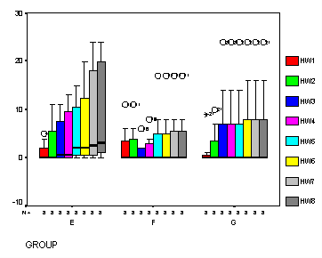
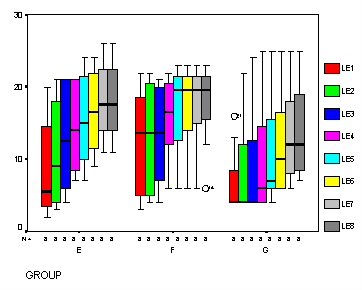
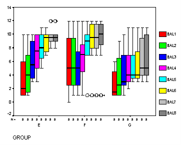
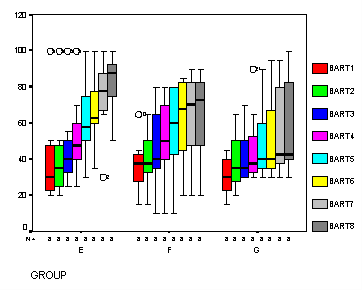

| / Home |
Keywords: repeated measures, one-way anova
This study compared three occupational therapy programs designed to help patients recover from the effects of a stroke. Eight stroke patients were assigned to each of the three treatment groups. The first group (E) was given an experimental program developed by the investigator from a model of intervention for stroke rehabilitation. The second group (F) was given a pre-existing program. The third group (G) was a non-treatment program. Each program lasted for 8 weeks. All subjects were evaluated at the start of the program and at weekly intervals until the next of the program.
Group E and F patients were treated in the Occupational Therapy Department of a large Brisbane repatriation hospital. Group G patients were located in the wards of a large State Hospital in Brisbane.
The recovery status of each subject at each time was evaluated using the Goteburg Evaluation of Hemiplegia and the Barthel Index. The Goteburg evalation form gave separate scores for three motor function variables (upper limbs, hand and wrist, lower limbs) and for balance while the Barthel Index gave a single overall score. Higher scores indicate better functional ability.
| Variable | Description | ||
| Subject | Subject ID | ||
| Group | Experimental (E), pre-existing (F) or non-treatment (G) | ||
| Sex | Male (M) or female (F) | ||
| Side | Side of brain affected, left (L) or right (R) | ||
| Age | Age of subject in years | ||
| Lapse | Time lapse from stroke to start of program in weeks | ||
| UE1 | Upper extremities score (out of 36) at week 1 | ||
| UE2 | ... week 2 | ||
| UE3 | ... week 3 | ||
| UE4 | ... week 4 | ||
| UE5 | ... week 5 | ||
| UE6 | ... week 6 | ||
| UE7 | ... week 7 | ||
| UE8 | ... week 8 | ||
| HW1 | Hand-wrist score (out of 24) at week 1 | ||
| HW2 | ... week 2 | ||
| HW3 | ... week 3 | ||
| HW4 | ... week 4 | ||
| HW5 | ... week 5 | ||
| HW6 | ... week 6 | ||
| HW7 | ... week 7 | ||
| HW8 | ... week 8 | ||
| LE1 | Lower extremities score (out of 30) at week 1 | ||
| LE2 | ... week 2 | ||
| LE3 | ... week 3 | ||
| LE4 | ... week 4 | ||
| LE5 | ... week 5 | ||
| LE6 | ... week 6 | ||
| LE7 | ... week 7 | ||
| LE8 | ... week 8 | ||
| Bal1 | Balance score (out of 14) at week 1 | ||
| Bal2 | ... week 2 | ||
| Bal3 | ... week 3 | ||
| Bal4 | ... week 4 | ||
| Bal5 | ... week 5 | ||
| Bal6 | ... week 6 | ||
| Bal7 | ... week 7 | ||
| Bal8 | ... week 8 | ||
| Bart1 | Barthel Index score (out of 100) at week 1 | ||
| Bart2 | ... week 2 | ||
| Bart3 | ... week 3 | ||
| Bart4 | ... week 4 | ||
| Bart5 | ... week 5 | ||
| Bart6 | ... week 6 | ||
| Bart7 | ... week 7 | ||
| Bart8 | ... week 8 | ||
Data file (tab-delimited text)
Cropper, C. (1977). Occupational Therapy and the Treatment of Stroke. Honours Thesis T18, Department of Occupational Therapy, University of Queensland, January 1977.






|
Home - About Us -
Contact Us Copyright © Gordon Smyth |